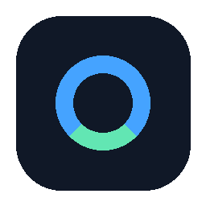

Codex Usage TrayYour Codex limits,
always visible.
A privacy-first Windows tray monitor for dynamic usage windows, reset times, and saved resets. No credential collection. No telemetry.
Codex — 3-hour window
68%remaining
ResetsToday at 18:40
Saved resets2
Small by design
Local
Reads summaries through the official local Codex App Server. It never opens your credential files.
Accurate
Displays the windows Codex reports instead of assuming a fixed five-hour limit.
Transparent
Open source, reproducible assets, SHA-256 release checksums, and no automatic update downloads.
Independent project. Not affiliated with or endorsed by OpenAI. MIT licensed.